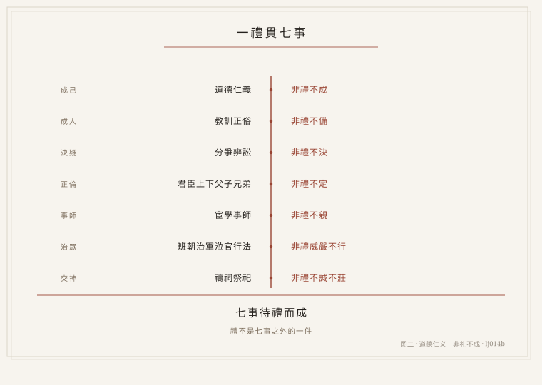

曲礼上 · 一·十五 · 第 14 课
这一节是全篇最长的一串：七件事，七个「非礼不……」。它不是七条戒律，是一张清单——礼在这七处各做什么。
说什么事：道德仁义、教训正俗、分争辨讼、君臣上下父子兄弟、宦学事师、班朝治军涖官行法、祷祠祭祀供给鬼神，七事皆待礼而成。
落在哪一层：义。前十三课讲人的分寸，这一课忽然放大：礼不只是修养，是七事成立的条件。
为何编在此位：一·十三给人格（质），一·十四给传授（教）；人格与传授都立住了，才敢说礼之大用。故一·十五为上半段之极。
【经】道德仁義，非禮不成；教訓正俗，非禮不備；分爭辨訟，非禮不決；君臣、上下、父子、兄弟，非禮不定；宦學事師，非禮不親；班朝治軍，涖官行法，非禮威嚴不行；禱祠祭祀，供給鬼神，非禮不誠不莊。
道 疏：「道者通物之名。」陈澔：「道犹路也，事物当然之理，人所共由故谓之道。」
德 疏「得理之称」；陈澔「行道而有得于身故谓之德」。
仁 疏「施恩及物」；陈澔「仁者心之德，爱之理」。
义 疏「裁断合宜」；陈澔「义者心之制，事之宜」。
成 四者「由礼而入，以礼而成」。成不是「做出」，是「成形」。
备 具备。疏引熊氏：「教谓教人师法，训谓训说义理，以此教训，正其风俗，非得其礼，不能备具。」
决 断。郑云：「争罪曰狱，争财曰讼。」礼所以正曲直、明是非。
定 定位。疏：「君父南面，臣子北面……唯礼能定也。」
亲 相亲。疏引熊氏：「宦谓学仕官之事，学谓习学六艺，此二者俱是事师，非礼不亲。」
威严 陈澔：「威则人不敢犯，严则人不敢违。」
诚庄 诚出于心，庄形于貌。疏：「求福曰祷，得求曰祠，牲币之属以供给鬼神。」
道德仁义，没有礼就不成形；教训正俗，没有礼就不周全；分争辨讼，没有礼就断不了；君臣上下父子兄弟，没有礼就定不了位；宦学事师，没有礼就不相亲；班朝治军、涖官行法，没有礼威严就行不开；祷祠祭祀、供给鬼神，没有礼就不诚不庄。
七事待礼而成。礼不是七事之外的一件，是七事之所以成形的条件。
第一层 「不成」二字的分量 七句排比，七个「不」，用法各不同：不成、不备、不决、不定、不亲、不行、不诚不庄。疏于第一句说得最重：「言人欲行四事，不用礼无由得成。」——不是礼帮它做好，是离了礼它根本不成形。道是路，德是得，仁是恩，义是断；四者都是心里的事，不落成形，就只是意思。
第二层 七事的次第 吕氏分得清：道德仁义「所以成己」，教训正俗「所以成人」，分争辨讼「所以决疑事」，君臣上下父子兄弟「所以正大伦」。以下宦学、班朝、祷祠，则事师、治众、交神。由己而人，由事而神，一条线上去。吕氏一句总收：「皆有待于礼者也。」
第三层 威与诚 第六句讲「威严」，第七句讲「诚庄」，二者看似相反：一个要人不敢犯，一个要神肯来享。疏解威严为「威则人不敢犯，严则人不敢违」，解诚庄为「诚出于心，庄形于貌」。合看则一：威不是凶，是分定之后人自然不犯；庄不是冷，是心里有之后貌自然不慢。皆非外加。
第四层 敬者德之聚 陈澔说四者「皆由礼而入，以礼而成，盖礼以敬为本，敬者德之聚也」。此语把整节收在一处：七事所待者，不是繁文，是一敬。敬聚，则道有路、德有得、仁有恩、义有断。
与今日何干 今日多把礼当「软技能」：会说话、懂分寸、场面好看。此节说的正相反：礼是硬条件。没有它，教化不成套，争讼断不了，组织定不了位，连祭祀都不诚。软的是人，硬的是礼。
| 左 | 右 |
|---|---|
| 成己：道德仁义，非礼不成 | 成人：教训正俗，非礼不备 |
| 决疑：分争辨讼，非礼不决 | 正伦：君臣上下，非礼不定 |
| 事师：宦学事师，非礼不亲 | 治众：班朝治军，非礼威严不行 |
| 交神：祷祠祭祀，非礼不诚不庄 | 七事所待者，非繁文，一敬 |
画七件器物一字排开：一枚印、一册简、一只权衡、一具圭、一支笔、一架鼓、一只鼎；七物之间以一道极淡的直线相连，线穿过每一物，不偏不倚。不画人。赭色只在线头与鼎足。
